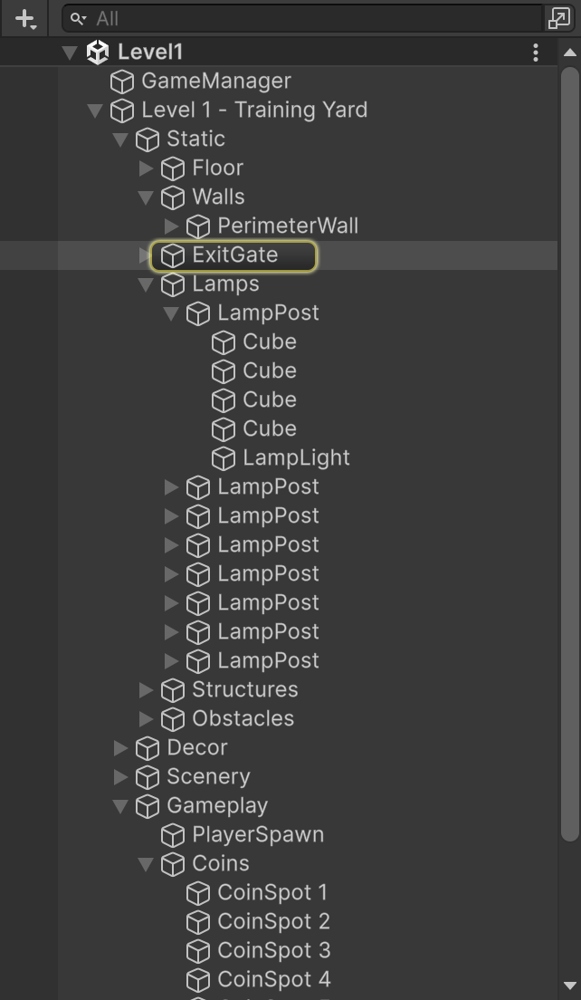
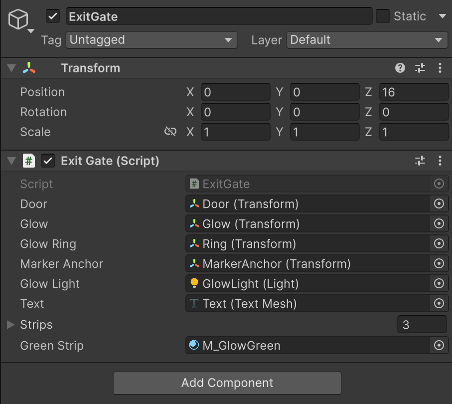
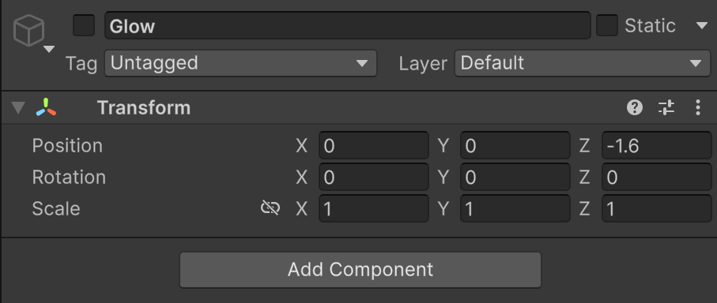
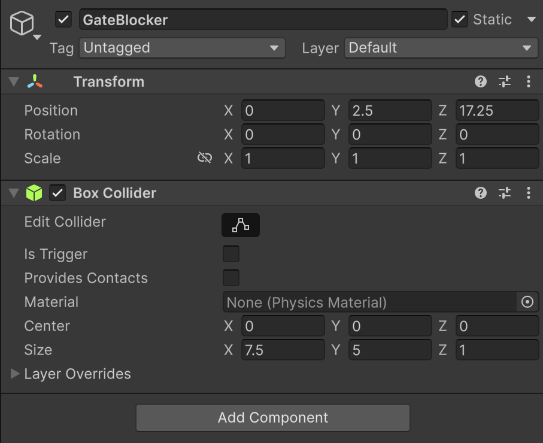
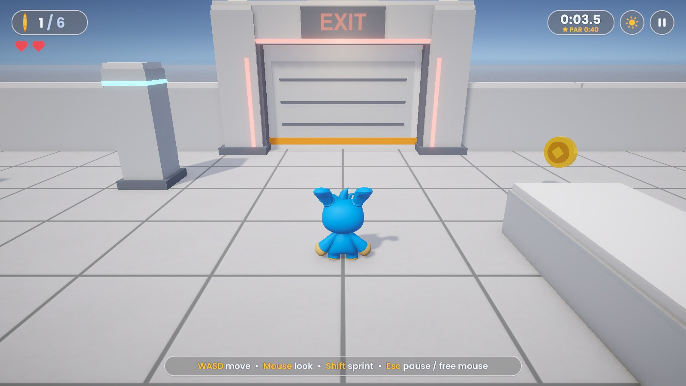

GOLD RUSH · Phase 6
Exit gate, win and lose
Now the level has an end. After the last coin the exit gate opens: the door sinks into the floor, the red lights turn green and a pad glows. Step on the pad and you win. The game gives you stars and gold, saves them, and shows the win dialog. You also learn the rules for losing, which the monsters use in Phase 7.
1What you get
The scene is the same as in Phase 5. This phase looks at the parts that end a level:
| Part | What it does |
|---|---|
Static/ExitGate + ExitGate.cs | The gate in the north wall. Open() sinks the door and turns the lights green. |
Static/Walls/PerimeterWall/GateBlocker | An invisible wall behind the gate, so you cannot walk out of the level. |
| GameManager: win and lose | Opens the gate, checks the win pad, counts stars and gold, saves, shows the dialog. |
Data.cs: level settings | Level 1 "Training Yard": 6 coins, par time 40 s, 2 lives. |
Package: GoldRush_Export/Packages/GoldRush_Phase06_Gate.unitypackage
2Import the package
- Make a new Universal 3D project and set it up like in Phase 0. Or delete the folder
Assets/GoldRushin your project first. - Assets → Import Package → Custom Package… →
GoldRush_Phase06_Gate.unitypackage→ Import. - Wait for the compile. No red errors in the Console.
- File → Build Profiles → Scene List:
Scenes/MainMenu(number 0), thenScenes/Level1. The win dialog's MENU button loadsMainMenufrom this list. - Open
Assets/GoldRush/Scenes/Level1.unity.
3Check
3.1 The gate in the Hierarchy
Open Level 1 - Training Yard/Static/ExitGate. Its children: the frame (Block and Cube parts), Door, Text (the EXIT sign), Glow (with Ring), GlowLight, LanternLight and MarkerAnchor.

3.2 The Exit Gate fields
Select ExitGate. Position 0, 0, 16 (the gap in the north wall), Rotation 0, 0, 0. Static (top right) is not ticked: the door moves. The Exit Gate component has every field filled:
| Field | Points to |
|---|---|
| Door | Door: the part that slides down |
| Glow / Glow Ring | Glow / Glow/Ring: the green pad and its turning ring |
| Marker Anchor | MarkerAnchor: 5.6 m up, for the EXIT label (Phase 9) |
| Glow Light | GlowLight: a green point light |
| Text | Text: the EXIT sign |
| Strips (3) | the three red light strips |
| Green Strip | the material Materials/M_GlowGreen |

3.3 The hidden glow
Select ExitGate/Glow. Its checkbox next to the name is off: the green pad is hidden until the gate opens. On ExitGate/GlowLight the Light component is off too.

3.4 The gate blocker
The door has no collider. So an invisible wall stands behind the opening. Select Static/Walls/PerimeterWall/GateBlocker: Position 0, 2.5, 17.25, Box Collider with Size 7.5, 5, 1, and no Mesh Renderer.

3.5 The level settings
Open Assets/GoldRush/Scripts/Core/Data.cs and find Levels.All. The first line is Level 1:
new LevelDef { title = "Training Yard", ..., scene = "Level1", size = 32, coins = 6, patrollers = 2,
powerUps = 1, ..., enemySpeed = 0.9f, parTime = 40 },parTime = 40 is the target time for a star. lives is not written, so it uses the default 2.

3.6 Play mode: the win dialog
Play the level to the end (see step 5). The win dialog appears. While it is open, look in the Hierarchy: GameUI/Modal/Win is active. (The dialog is made by code for now. The scene UI comes in Phase 9.)

4How it works
The steps of a level:
- Intro: the camera flies in, 3, 2, 1, GO! The hero cannot move yet.
- Playing: the timer counts.
- All gold collected: the gate opens.
- Win: you come closer than 2.4 m to the pad in front of the gate.
- Lose: your last heart is gone (monsters, Phase 7).
The key lines in Scripts/Gameplay/GameManager.cs:
void AllCollected()
{
if (Gate) Gate.Open();
AudioFX.Play("gate");
Cam.Shake(0.12f, 0.8f);
}
// in Update(), every frame:
if (Gate && Gate.IsOpen)
{
Vector3 d = Gate.WinPoint - Player.transform.position; d.y = 0;
if (d.sqrMagnitude < 2.4f * 2.4f) Win();
}
// in Win():
r.stars = 1 + (r.parBeaten ? 1 : 0) + (r.noHits ? 1 : 0);
r.goldEarned = Collected + r.stars * 5;GetComponentInChildren<ExitGate>()finds the gate inside the level root.WinPointis 1.5 m in front of the gate (its -Z side).d.y = 0: only the flat distance counts.Win()saves the best time and the stars of the level, unlocks the next level and adds the gold.Save.Persist()writes it to disk, so the menu (Phase 2) shows it.Lose()plays the fall animation, slows time to 30 % for 1.1 s, adds the coins you took to your gold, and shows the lose dialog.
| Star | You get it when… | Code |
|---|---|---|
| ★ 1 | you win (always) | 1 + |
| ★ 2 | your time is 40 s or less | parBeaten = Elapsed <= Def.parTime |
| ★ 3 | no monster hit you | noHits = Hits == 0 |
The door moves in ExitGate.Update() (Scripts/World/ExitGate.cs):
const float dur = 1.2f;
openT += Time.deltaTime;
float k = Mathf.Clamp01(openT / dur);
k = k * k * (3f - 2f * k); // smoothstep: slow start, slow end
door.localPosition = new Vector3(0f, -(DoorH + 0.3f) * k, 0f); // 3.6 m downOpen() also switches on Glow and GlowLight, turns the EXIT text green and gives the strips the M_GlowGreen material. After that, the pad "breathes" and the ring turns 40° per second.
5▶ Press Play
- Open
MainMenu, press ▶ Play, click PLAY. - Collect the 6 coins, then run to the gate.
You should see:
- After the last coin: the gate sound, a small camera shake, the door slides down, the strips and the EXIT sign turn green, the pad glows.
- Walk onto the green pad: the hero turns to the camera and waves, confetti flies.
- The win dialog shows your stars, time and gold. Under 40 s you get the second star. No monsters yet, so the third star is free.
- Click MENU. On the LEVELS screen, Level 1 shows your stars and Level 2 is open. Your gold went up.

6Try it
- A slow door. In
Scripts/World/ExitGate.cs, changeconst float dur = 1.2f;to5f. The door sinks in 5 seconds. - Another sign. Select
Static/ExitGate/Text. In Text Mesh, change Text fromEXITtoOUT. Save the scene and look at the gate. - A hard star. In
Scripts/Core/Data.cs, changeparTime = 40(Training Yard) to15. Can you still get the second star?
Change everything back when you are done.
7Common problems
| Problem | Fix |
|---|---|
| All coins collected, but the gate does not open. | The gate must be inside Level 1 - Training Yard and have the Exit Gate component with Door filled. |
| The gate opens, but the strips stay red. | Strips or Green Strip is empty on Exit Gate (check 3.2). |
| The green pad is visible before the gate opens. | Untick the Glow object (check 3.3). |
| I stand at the gate and nothing happens. | Collect all coins first. The gate Rotation must be 0, 0, 0: the win point is on its -Z side. |
| The hero walks out through the open gate. | GateBlocker is missing or has no Box Collider (check 3.4). |
| MENU in the dialog: "Scene 'MainMenu' couldn't be loaded". | Add MainMenu to the Scene List (step 2). |
More fixes are on the Troubleshooting page.
Checkpoint package: GoldRush_Phase06_Gate.unitypackage